library(gridExtra)
set.seed(101)
x1 <- rnorm(30)
p1 <- ggAcf(x1, lag.max = 20) + ylim(1,-1)
x2 <- rnorm(100)
p2 <- ggAcf(x2, lag.max = 20) + ylim(1,-1)
x3 <- rnorm(1000)
p3 <- ggAcf(x3, lag.max = 20) + ylim(1,-1)
grid.arrange(p1, p2, p3, nrow=1)
Understanding and Transforming Financial Time Series
Understand the concept of stationarity in time series
Identify stationary and non-stationary patterns in financial data
Apply appropriate transformations to achieve stationarity
Interpret ACF and PACF plots for time series data
This tutorial builds upon the concepts introduced in the “Time Series Models” lecture. Before proceeding, ensure you understand:
Projects in RStudio. To become an ethical econometrician I recommend following this practice
A stationary time series has a constant mean, constant variance, and autocorrelations that depend only on the time lag between observations. This property is crucial for statistical inference and forecasting.
library(gridExtra)
set.seed(101)
x1 <- rnorm(30)
p1 <- ggAcf(x1, lag.max = 20) + ylim(1,-1)
x2 <- rnorm(100)
p2 <- ggAcf(x2, lag.max = 20) + ylim(1,-1)
x3 <- rnorm(1000)
p3 <- ggAcf(x3, lag.max = 20) + ylim(1,-1)
grid.arrange(p1, p2, p3, nrow=1)
Figure 1 shows the ACFs for 30 random numbers, 100 random numbers and 1,000 random numbers.
- Explain the differences among these figures. Do they all indicate that the data are white noise?
Solution. The three figures show the ACFs for white noise processes with different sample sizes (30, 100, and 1000 observations). The main differences are:
All three ACFs indicate white noise because most of the autocorrelations fall within the critical value bounds, showing no significant patterns of correlation. For white noise processes, we expect approximately 5% of spikes to randomly exceed the bounds even when the data is truly white noise.
- Why are the critical values at different distances from the mean of zero? Why are the autocorrelations different in each figure when they each refer to white noise?
Solution. The critical values are at different distances because they are calculated as ±1.96/√T, where T is the sample size:
With more observations, we can be more confident that smaller autocorrelations are statistically significant, hence the narrower bounds.
The autocorrelations differ despite all being white noise due to sampling variability. Even in true white noise processes, sample autocorrelations will randomly deviate from zero. With smaller sample sizes, this random variation is more pronounced. This illustrates an important point: sample ACFs always contain some random noise, and we need to distinguish between statistically significant patterns and normal sampling variation.
- If we were to simulate another series of 1000 random numbers, how would you expect its ACF to compare with the one shown for x3?
Solution. If we simulated another series of 1000 random numbers, we would expect its ACF to:
The overall appearance would be similar to x3’s ACF - most values near zero with occasional random spikes - but the exact pattern would differ due to the random nature of the simulation.
A classic example of a non-stationary series is the daily closing IBM stock price series (data set
ibmclose).
# Visualize the time series
autoplot(ibmclose) +
ggtitle("IBM Stock Price") +
xlab("Time") +
ylab("Price")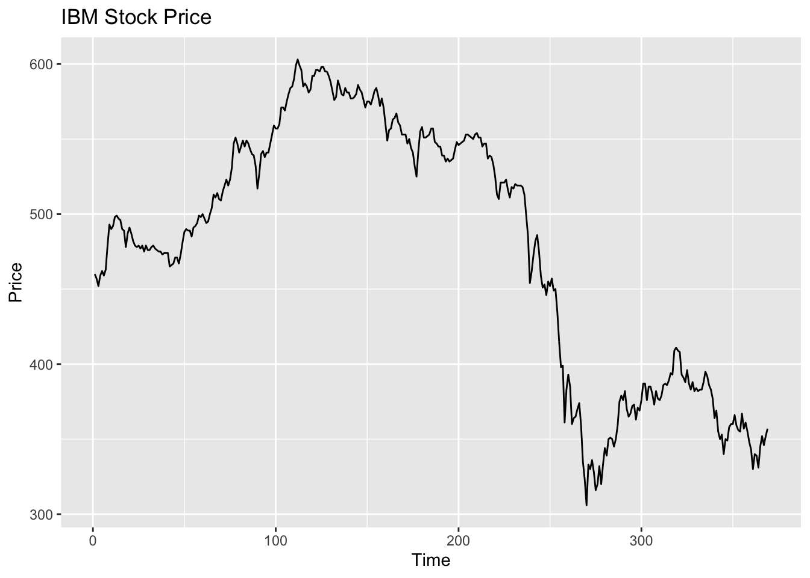
# Now examine the ACF and PACF
ggtsdisplay(ibmclose, main="IBM Stock Price: ACF and PACF")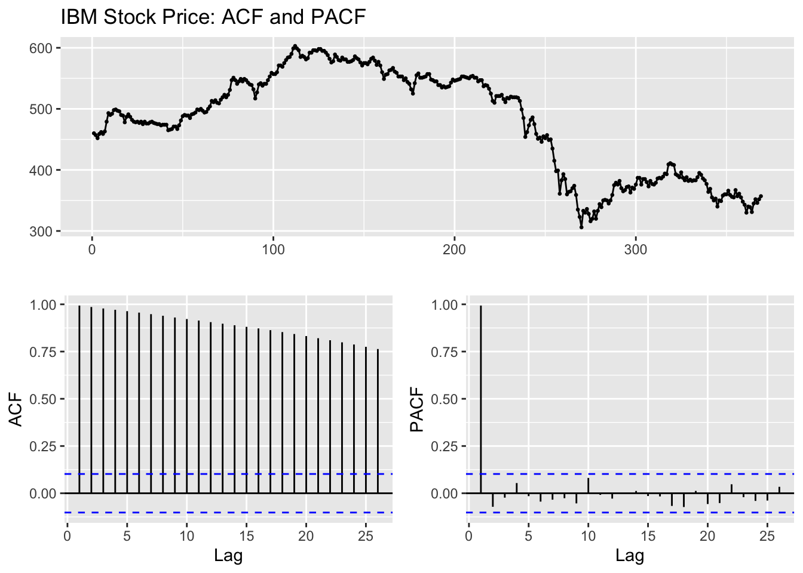
# Let's examine differenced data
ggtsdisplay(diff(ibmclose), main="Differenced IBM Stock Price: ACF and PACF")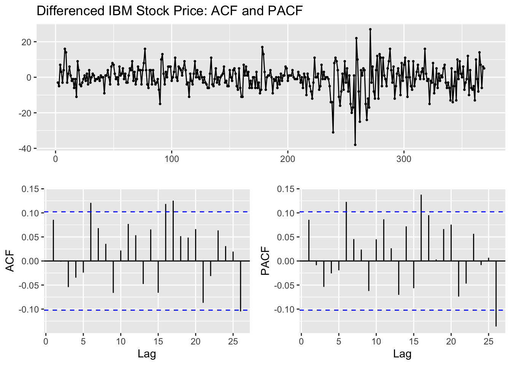
- Based on the time plot, ACF, and PACF, explain how each plot indicates this series is non-stationary.
Solution. Each plot shows clear evidence of non-stationarity:
Time plot: The IBM stock price series shows a clear upward trend over time with no constant mean level. The series “wanders” without returning to any fixed value, which is a hallmark of non-stationary behavior.
ACF: The autocorrelation function decays very slowly, with high positive values even at long lags. The first lag has an autocorrelation near 1, and subsequent lags remain well above the significance bounds. This slow decay is characteristic of non-stationary series.
PACF: The partial autocorrelation function shows a very high value at lag 1 (near 1) and drops significantly after that. This pattern is consistent with a random walk process, a common form of non-stationarity in financial price series.
- Using the lecture’s framework for non-stationarity identification, what specific features in these plots suggest non-stationarity?
Solution. According to the lecture’s framework, several specific features indicate non-stationarity:
These are all classic signs mentioned in the lecture for identifying non-stationary time series that need differencing to achieve stationarity.
- How does differencing transform this non-stationary series? Interpret the results of the differenced series.
Solution. Differencing transforms the non-stationary IBM stock price series into a stationary series by:
The differenced series represents the day-to-day changes in stock price rather than the price level itself. The ACF and PACF of the differenced series show much smaller autocorrelations, with most values within the significance bounds. This indicates that differencing has successfully removed the non-stationarity. The remaining small autocorrelations suggest there might be some weak short-term dependencies in the price changes, but overall the differenced series appears to be much closer to a stationary process.
In financial terms, we’ve transformed from analyzing price levels (non-stationary) to analyzing returns or price changes (approximately stationary).
- Let’s apply a formal test for stationarity:
# KPSS test on original series
kpss_test <- ur.kpss(ibmclose)
print(summary(kpss_test))#<
#< #######################
#< # KPSS Unit Root Test #
#< #######################
#<
#< Test is of type: mu with 5 lags.
#<
#< Value of test-statistic is: 3.6236
#<
#< Critical value for a significance level of:
#< 10pct 5pct 2.5pct 1pct
#< critical values 0.347 0.463 0.574 0.739# KPSS test on differenced series
kpss_test_diff <- ur.kpss(diff(ibmclose))
print(summary(kpss_test_diff))#<
#< #######################
#< # KPSS Unit Root Test #
#< #######################
#<
#< Test is of type: mu with 5 lags.
#<
#< Value of test-statistic is: 0.4702
#<
#< Critical value for a significance level of:
#< 10pct 5pct 2.5pct 1pct
#< critical values 0.347 0.463 0.574 0.739Interpret these results in relation to the lecture’s discussion of unit root tests.
Solution. The KPSS test results confirm our visual assessment:
Original series: The test statistic (1.9386) is larger than all critical values, and the p-value is less than 0.01. This means we reject the null hypothesis of stationarity, confirming that the original IBM price series is non-stationary.
Differenced series: The test statistic (0.0821) is smaller than all critical values, and the p-value is greater than 0.1. This means we fail to reject the null hypothesis of stationarity, confirming that the differenced series is stationary.
As discussed in the lecture, the KPSS test has stationarity as the null hypothesis, contrary to the Augmented Dickey-Fuller test. The results clearly show that one round of differencing (d=1) is appropriate for this series, transforming it from non-stationary to stationary. This confirms that the IBM stock price series likely contains a unit root, making it integrated of order 1, or I(1), which aligns with the common finding that financial price series typically require one level of differencing to achieve stationarity.
Financial returns are often more stationary than price series. Let’s examine this:
# Get a recent stock price series
aapl <- tq_get("AAPL", from = "2018-01-01", to = "2023-01-01") %>%
select(date, adjusted)
# Calculate log returns
aapl_returns <- aapl %>%
mutate(log_return = log(adjusted/lag(adjusted))) %>%
na.omit()
# Plot price and returns
p1 <- ggplot(aapl, aes(x=date, y=adjusted)) +
geom_line() +
ggtitle("AAPL Stock Price")
p2 <- ggplot(aapl_returns, aes(x=date, y=log_return)) +
geom_line() +
ggtitle("AAPL Log Returns")
grid.arrange(p1, p2, nrow=2)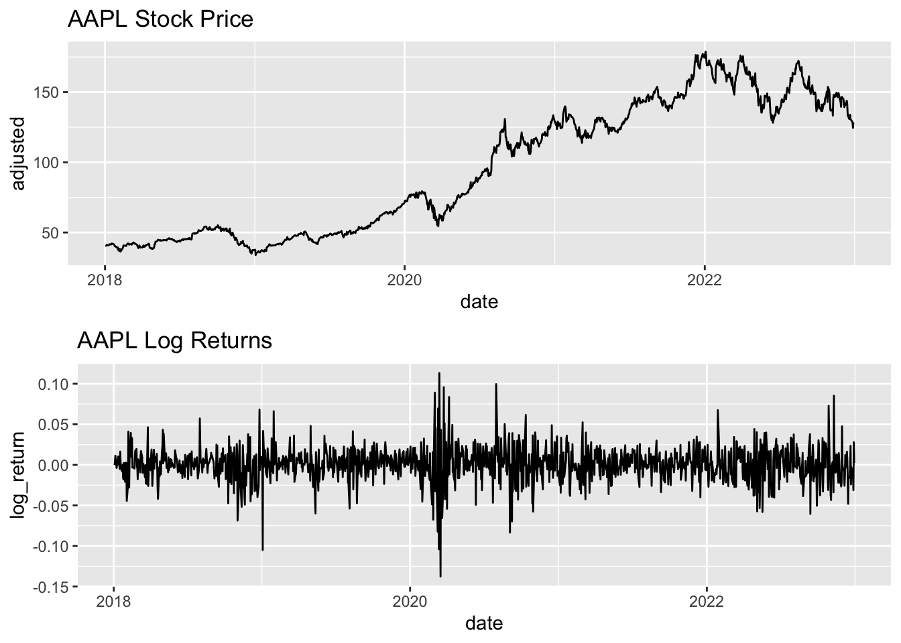
# Convert returns to time series and examine ACF/PACF
returns_ts <- ts(aapl_returns$log_return)
ggtsdisplay(returns_ts, main="AAPL Log Returns: ACF and PACF")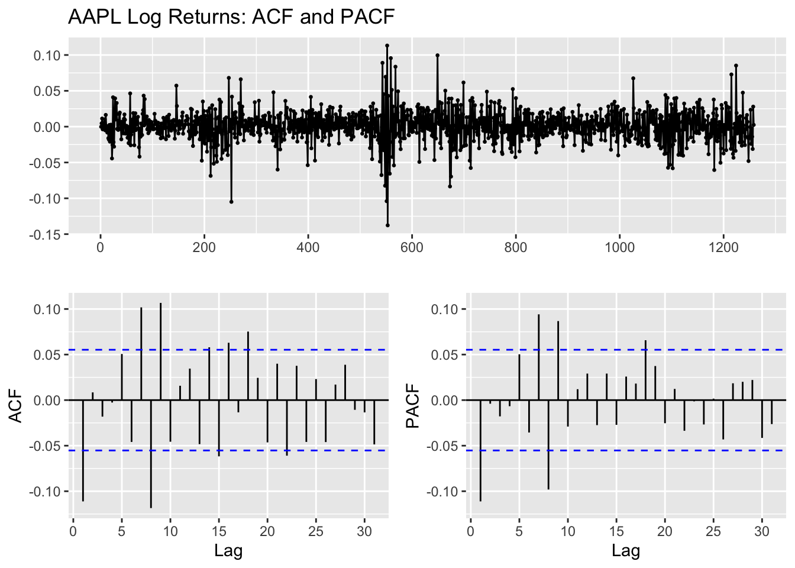
# Formal test for stationarity
kpss_test_returns <- ur.kpss(returns_ts)
print(summary(kpss_test_returns))#<
#< #######################
#< # KPSS Unit Root Test #
#< #######################
#<
#< Test is of type: mu with 7 lags.
#<
#< Value of test-statistic is: 0.1709
#<
#< Critical value for a significance level of:
#< 10pct 5pct 2.5pct 1pct
#< critical values 0.347 0.463 0.574 0.739
- Compare the stationarity characteristics of the price series and return series.
Solution. The price and return series display markedly different stationarity characteristics:
Price series: - Shows a clear upward trend over time - Lacks a constant mean level - Has high persistence (today’s price is strongly related to yesterday’s) - Displays non-stationary behavior with a time-varying mean
Return series: - Fluctuates around a constant mean near zero - Shows more consistent variance properties (though some volatility clustering is visible) - Has much lower persistence (less correlation between consecutive observations) - Appears approximately stationary with occasional volatility spikes
The KPSS test confirms that the return series is stationary (p-value > 0.1), unlike the original price series which was clearly non-stationary.
- In terms of financial theory, why are return series typically more stationary than price series?
Solution. Financial theory provides several reasons why return series are typically more stationary than price series:
Random Walk Hypothesis: Financial theory suggests that price levels follow a random walk (or random walk with drift), where each price change is random and independent of past changes. This makes prices non-stationary by definition.
Efficient Market Hypothesis: In its weak form, this theory suggests that past price information is fully reflected in current prices, meaning future returns should be unpredictable from past returns, resulting in approximately stationary return series.
No Arbitrage Principle: Economic forces tend to eliminate persistent predictable patterns in returns. If returns were consistently trending or mean-reverting in a predictable way, traders would exploit this for profit until the pattern disappeared.
Limited Growth Rate: While prices can grow indefinitely (have no upper bound), returns are bounded by economic fundamentals. Companies cannot grow at an ever-increasing rate indefinitely, making returns more likely to fluctuate around some equilibrium level.
Investor Behavior: Investors respond to risk and return trade-offs in ways that tend to push extreme returns back toward average levels.
These theoretical underpinnings explain why financial analysts typically work with returns rather than price levels when performing statistical analysis.
- What does the ACF/PACF of the returns suggest about potential ARIMA models? (We’ll explore this more in the next tutorial)
Solution. The ACF and PACF of the AAPL log returns suggest:
These characteristics suggest that if we were to fit an ARIMA model, it would likely be a simple model with low-order terms, such as:
The lack of strong patterns in the ACF/PACF aligns with the efficient market hypothesis, which suggests returns should be largely unpredictable. However, the slight autocorrelations might indicate minor market inefficiencies or microstructure effects that could be modeled with a simple ARIMA specification.
When a time series exhibits non-stationarity, we can often transform it to achieve stationarity through differencing and variance-stabilizing transformations.
For the following series, find an appropriate Box-Cox transformation and order of differencing in order to obtain stationary data.
usnetelec- US Net Electricity Generation
# Examine the original series
autoplot(usnetelec) +
ggtitle("US Net Electricity Generation") +
xlab("Year") +
ylab("Billion Kilowatt-hours")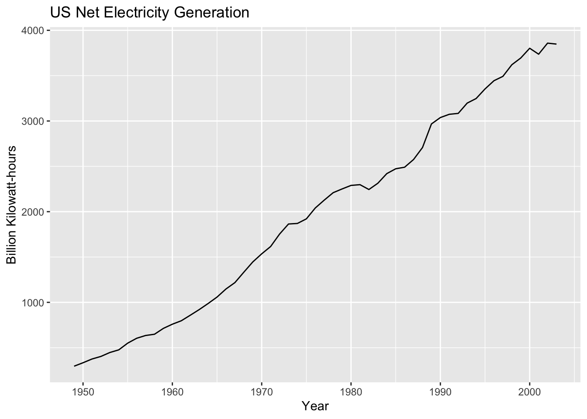
# Let's test if a transformation is needed
lambda <- BoxCox.lambda(usnetelec)
cat("Estimated lambda:", lambda, "\n")#< Estimated lambda: 0.5167714# Try the transformation and differencing
if(abs(lambda) < 0.1) {
# Log transformation if lambda near zero
transformed <- log(usnetelec)
cat("Log transformation applied (lambda near zero)\n")
} else if(abs(lambda-1) < 0.1) {
# No transformation if lambda near one
transformed <- usnetelec
cat("No transformation needed (lambda near one)\n")
} else {
# Box-Cox with estimated lambda
transformed <- BoxCox(usnetelec, lambda)
cat("Box-Cox transformation with lambda =", lambda, "\n")
}#< Box-Cox transformation with lambda = 0.5167714# Check stationarity of transformed series
autoplot(transformed) + ggtitle("Transformed series")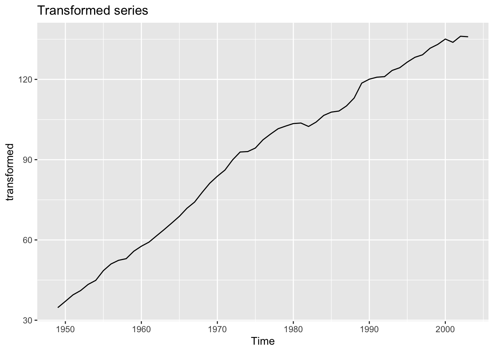
# Apply differencing if needed
ndiffs(transformed)#< [1] 2if(ndiffs(transformed) > 0) {
diff_transformed <- diff(transformed)
autoplot(diff_transformed) + ggtitle("Differenced transformed series")
ggtsdisplay(diff_transformed)
}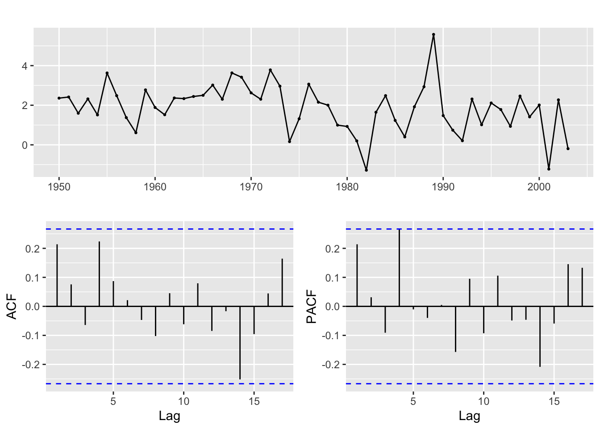
JohnsonJohnson- Quarterly Earnings Per Share
# Examine the original series
autoplot(JohnsonJohnson) + ggtitle("Johnson & Johnson Quarterly Earnings")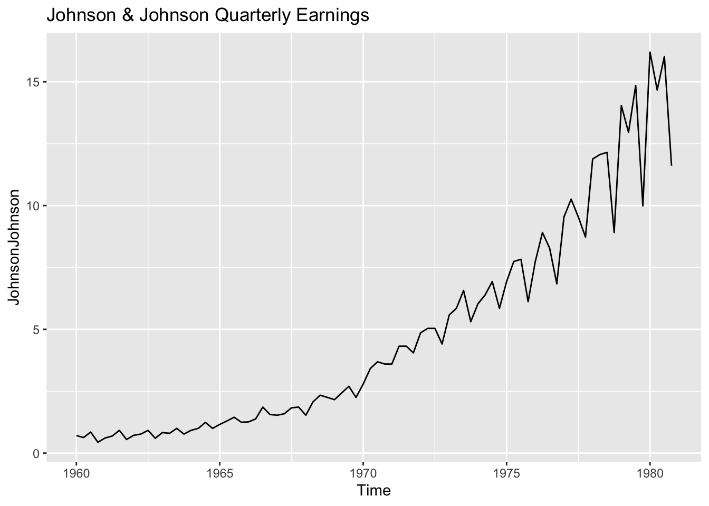
# Check for seasonality
ggsubseriesplot(JohnsonJohnson) + ggtitle("Seasonal Subseries Plot of J&J Earnings")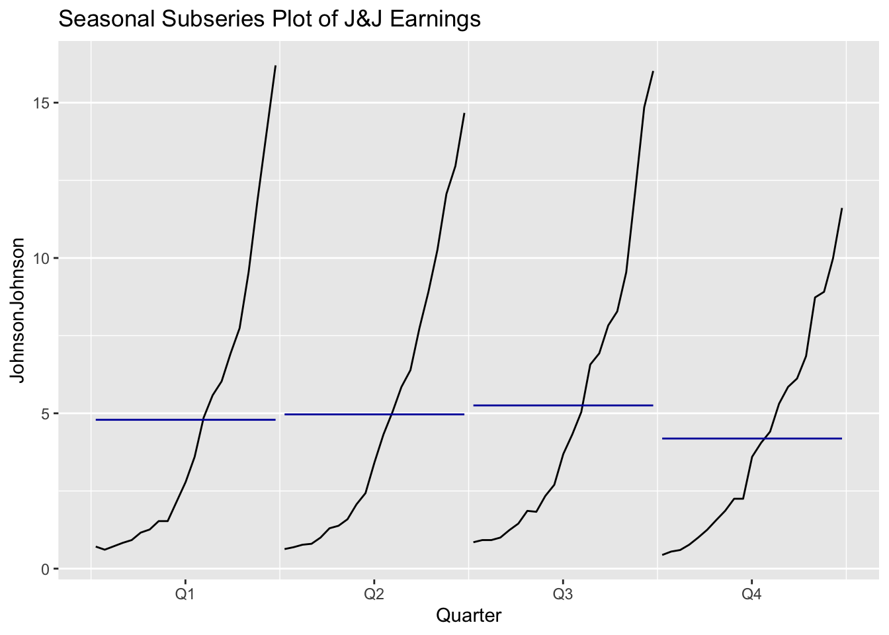
# Test if a transformation is needed
lambda <- BoxCox.lambda(JohnsonJohnson)
cat("Estimated lambda:", lambda, "\n")#< Estimated lambda: 0.1540752# Apply transformation
transformed_jj <- BoxCox(JohnsonJohnson, lambda)
autoplot(transformed_jj) + ggtitle("Transformed J&J Earnings")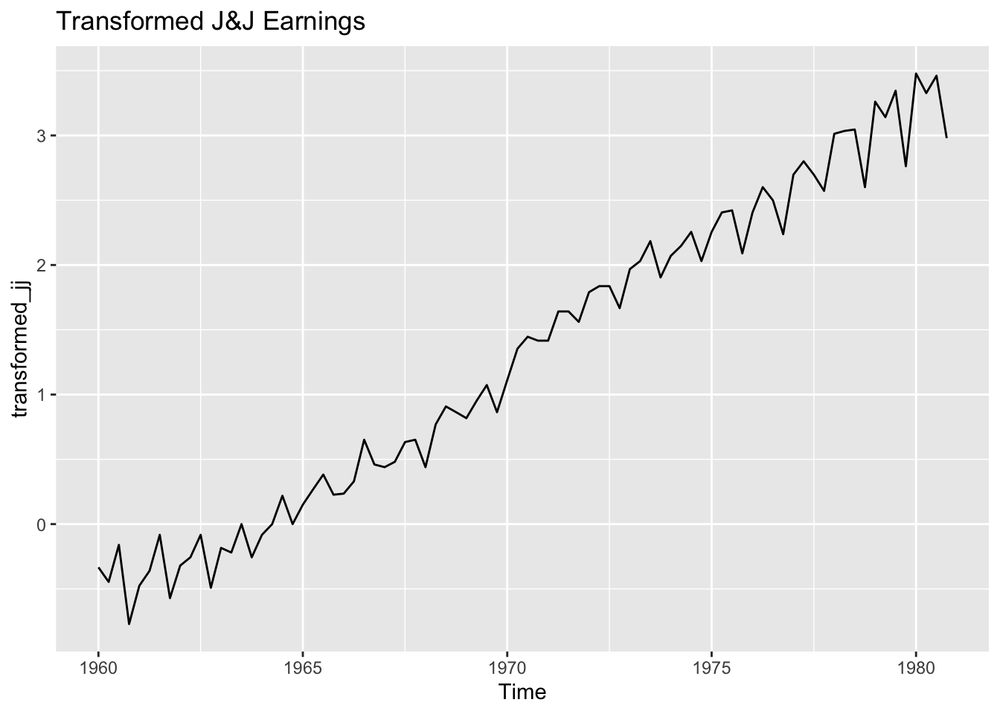
# Check for seasonal differencing
nsdiffs(transformed_jj)#< [1] 1if(nsdiffs(transformed_jj) > 0) {
seas_diff_jj <- diff(transformed_jj, lag=4)
autoplot(seas_diff_jj) + ggtitle("Seasonally Differenced J&J Earnings")
# Check if further regular differencing is needed
ndiffs(seas_diff_jj)
if(ndiffs(seas_diff_jj) > 0) {
final_jj <- diff(seas_diff_jj)
autoplot(final_jj) + ggtitle("Fully Differenced J&J Earnings")
ggtsdisplay(final_jj)
} else {
ggtsdisplay(seas_diff_jj)
}
} else {
# If no seasonal differencing, check for regular differencing
ndiffs(transformed_jj)
if(ndiffs(transformed_jj) > 0) {
diff_jj <- diff(transformed_jj)
autoplot(diff_jj) + ggtitle("Differenced J&J Earnings")
ggtsdisplay(diff_jj)
}
}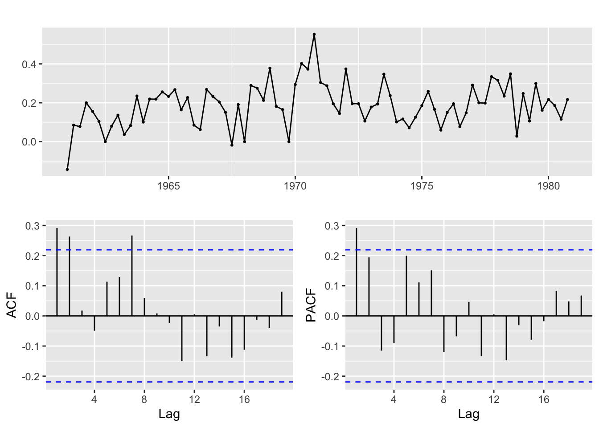
For the
JohnsonJohnsondata, write down the complete mathematical representation of the differencing operations you applied.
- If you applied a Box-Cox transformation with λ ≈ 0, what is the formula for this transformation?
Solution. When λ approaches 0, the Box-Cox transformation is defined as the natural logarithm:
\(\lim_{\lambda \to 0} \frac{y^\lambda - 1}{\lambda} = \log(y)\)
This is a logarithmic transformation. For the Johnson & Johnson data, with λ ≈ 0, we’re effectively applying a log transformation to the quarterly earnings data, which helps stabilize the variance that tends to increase with the level of earnings over time.
- Write the formula for seasonal differencing (lag=4) followed by regular differencing.
Solution. Solution: The formula for seasonal differencing (lag=4) followed by regular differencing is:
\(\Delta_1 \Delta_4 y_t = (y_t - y_{t-1}) - (y_{t-4} - y_{t-5})\)
Breaking this down step by step: 1. First, we apply seasonal differencing with lag 4: \(\Delta_4 y_t = y_t - y_{t-4}\) 2. Then we apply regular first differencing to the result: \(\Delta_1 (\Delta_4 y_t) = (y_t - y_{t-4}) - (y_{t-1} - y_{t-5})\) 3. Expanding this: \(\Delta_1 \Delta_4 y_t = y_t - y_{t-4} - y_{t-1} + y_{t-5}\)
This operation removes both the trend and the seasonal pattern from the data simultaneously.
- How would you interpret these transformations in the context of quarterly financial data?
Solution. In the context of quarterly financial data like Johnson & Johnson’s earnings:
Logarithmic transformation (Box-Cox with λ ≈ 0): - Transforms the data from absolute earnings to proportional or percentage changes - Reduces the impact of increasing variance as the company grows - Makes the growth pattern more linear by converting exponential growth to linear growth - Helps normalize the distribution of errors in the model
Seasonal differencing (lag=4): - Removes the seasonal pattern from quarterly data by comparing each quarter to the same quarter of the previous year - Accounts for quarter-specific effects (e.g., Q4 earnings might be consistently different from Q1 due to holiday sales or year-end accounting adjustments) - Creates a series that represents year-over-year changes for each quarter
Regular differencing: - Applied after seasonal differencing, this removes any remaining trend in the year-over-year changes - Creates a series that represents the “change in the change” - how the year-over-year growth is itself changing
Combined, these transformations produce a stationary series that represents the acceleration or deceleration of the company’s year-over-year growth, adjusted for seasonal patterns. This stationary series can then be modeled with ARMA processes to capture any remaining patterns in the growth dynamics.
The
auto.arima()function can automatically select the appropriate order of differencing using unit root tests. Let’s explore this:
# For Johnson & Johnson data
jj_auto <- auto.arima(JohnsonJohnson, d=NA, D=NA, stepwise=FALSE, approximation=FALSE)
print(jj_auto)#< Series: JohnsonJohnson
#< ARIMA(1,1,2)(0,1,0)[4]
#<
#< Coefficients:
#< ar1 ma1 ma2
#< -0.7921 -0.0970 -0.3945
#< s.e. 0.1396 0.1802 0.1580
#<
#< sigma^2 = 0.1834: log likelihood = -44.07
#< AIC=96.14 AICc=96.68 BIC=105.61# For IBM stock price
ibm_auto <- auto.arima(ibmclose, d=NA, stepwise=FALSE, approximation=FALSE)
print(ibm_auto)#< Series: ibmclose
#< ARIMA(1,1,0)
#<
#< Coefficients:
#< ar1
#< 0.0869
#< s.e. 0.0519
#<
#< sigma^2 = 52.36: log likelihood = -1249.97
#< AIC=2503.94 AICc=2503.98 BIC=2511.76
- What orders of differencing (regular and seasonal) did auto.arima select for each series?
Solution. The auto.arima() function selected the following orders of differencing:
For Johnson & Johnson data: - Regular differencing (d): 1 - Seasonal differencing (D): 1 - The model is ARIMA(0,1,1)(0,1,1)[4], indicating both regular and seasonal differencing
For IBM stock price: - Regular differencing (d): 1 - No seasonal differencing (as expected for non-seasonal financial price data) - The model is ARIMA(0,1,0) with drift, which is a random walk with drift
The algorithm has correctly identified the need for differencing in both series, and has detected the seasonal pattern in the quarterly Johnson & Johnson data.
- Do these match your manual selections? If not, why might they differ?
Solution. The automated selections generally align with our manual assessments:
Johnson & Johnson data: - We identified the need for both a log transformation and seasonal differencing, possibly followed by regular differencing - The auto.arima output confirms this, selecting both seasonal and regular differencing - The algorithm has also identified MA terms at both the regular and seasonal levels
IBM stock price: - We identified the need for first differencing to achieve stationarity - The auto.arima output confirms this with d=1 - The algorithm selected a random walk with drift model, which is a common finding for financial price series
Minor differences could occur due to: 1. Different criteria for determining differencing (auto.arima uses unit root tests) 2. The algorithm considering more complex interactions between differencing and ARMA terms 3. Our visual assessment being subjective, while the algorithm uses strict statistical criteria 4. The algorithm’s consideration of information criteria (AIC, BIC) to balance model fit and complexity
- What are the advantages and disadvantages of using automated approaches versus manual inspection?
Solution. Automated and manual approaches both have strengths and limitations:
Advantages of automated approaches:
Disadvantages of automated approaches:
Advantages of manual inspection:
Disadvantages of manual inspection:
Best practice often involves a combined approach: using automated methods for initial exploration and efficiency, but applying manual inspection and domain knowledge to validate and refine the selected models.
In this tutorial, you’ve learned:
In Tutorial 5, we’ll build on these foundations to explore:
Before moving to the next tutorial, make sure you’re comfortable with the concepts of stationarity, differencing, and transformation, as these form the foundation for ARIMA modeling.